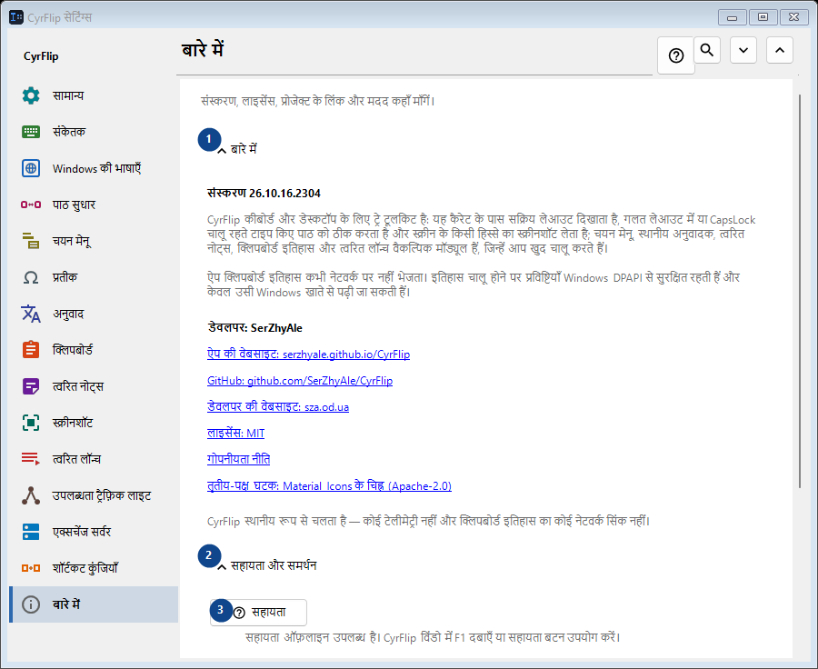
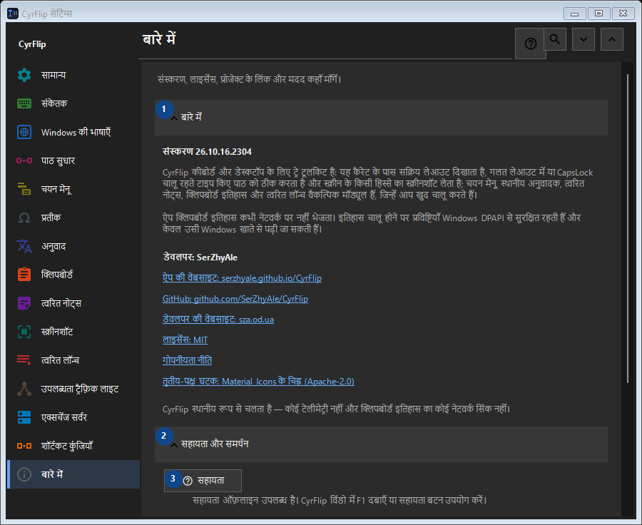

बारे में
इसका उपयोग
संस्करण, लाइसेंस, प्रोजेक्ट के लिंक और मदद कहाँ माँगें।


उपयोग का क्रम
सेटिंग तुरंत लागू होती हैं। कोई अनिवार्य क्रम नहीं है; नीचे दिए समूहों का उपयोग करें।
तत्व
1. बारे में
बताई गई कार्रवाई के लिए इस आदेश का उपयोग करें। स्वीकार करने से पहले पुष्टि पढ़ें।
आपके शॉर्टकट2. सहायता और समर्थन
बताई गई कार्रवाई के लिए इस आदेश का उपयोग करें। स्वीकार करने से पहले पुष्टि पढ़ें।
आपके शॉर्टकट3. सहायता
सहायता ऑफ़लाइन उपलब्ध है। CyrFlip विंडो में F1 दबाएँ या सहायता बटन उपयोग करें।
आपके शॉर्टकट4. स्वागत परिचय दिखाएँ..
CyrFlip को जानें और सेट अप करें।
आपके शॉर्टकट5. कैरेट की स्थिति की जाँच...
एक स्थानीय रिपोर्ट बनाता है कि Windows और UI Automation कैरेट को कैसे देखते हैं। इसकी ज़रूरत केवल तब है जब किसी खास ऐप में चिह्न नहीं दिखता या गलत जगह दिखता है।
आपके शॉर्टकट6. लॉग लेखक को भेजें..
CyrFlip के लॉग को एक संग्रह में इकट्ठा करता है और उसे संलग्न करके लेखक के लिए संदेश खोलता है। संदेश आप स्वयं भेजते हैं - CyrFlip नेटवर्क पर कुछ नहीं भेजता। क्लिपबोर्ड इतिहास संग्रह में कभी शामिल नहीं होता।
आपके शॉर्टकट